Новое мобильное приложение WebMoney App
Роль:
Дизайнер — исследование, проектирование, UI, UX, анимации
Результат:
Обновлённый визуал, упрощённая структура и новые функции

Идея пришла при использовании приложения: устаревший визуал и запутанная структура текущего дизайна натолкнули на мысль о необходимости редизайна, и понеслась...
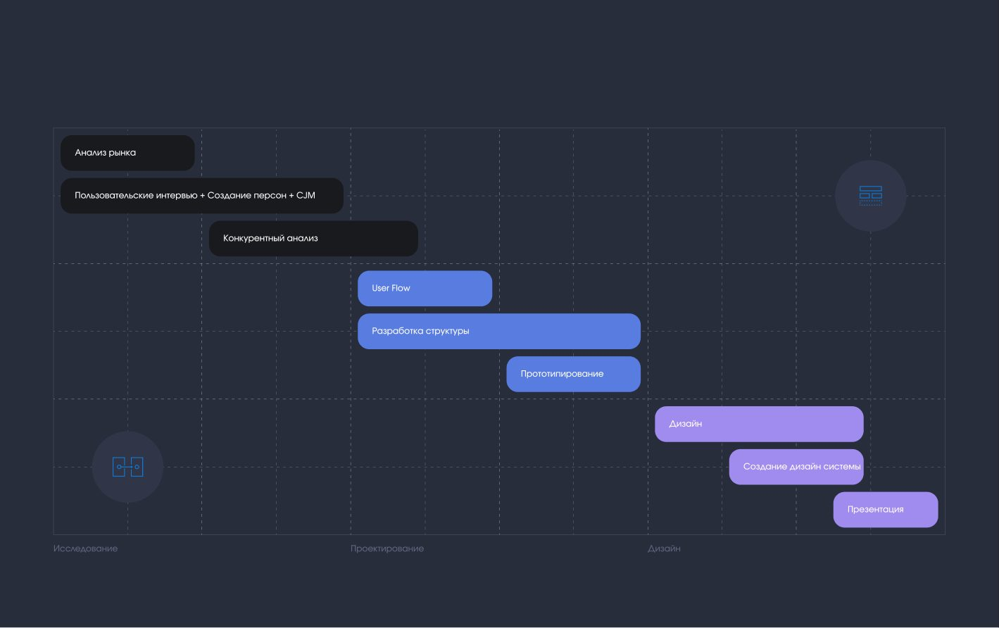
Анализ рынка
Согласно исследованиям компании Mediascope 2020 года, самые активные пользователи электронных денег в крупных городах России:
Прослеживается увеличение популярности товаров и услуг, которые используются дома
Процент пользователей, которые минимум раз в год платят за различные товары и услуги с компьютера или смартфона
* Данные для исследований составлены из открытых источников и соцсетей и могут отличаться от реальных.
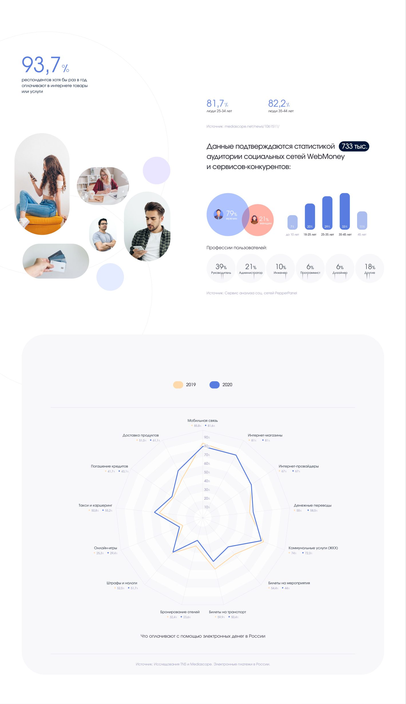
Пользовательские интервью
На основе опроса знакомых пользователей приложения и отзывов о приложении в App Store, Google Play и на независимых сайтах с отзывами сформирован список проблем, которые можно решить с помощью редизайна:
Сложности с обращением в техническую поддержку
Недостаточный функционал: например, нет возможности привязать банковскую карту к кошельку
Визуально устаревший интерфейс
Сложная запутанная структура и, как следствие, проблемы с доступом к важному функционалу
Несоответствие устоявшимся паттернам поведения в более популярных банковских сервисах
На главном экране сделан акцент на пополнении баланса и истории операций. Раздражает принцип «пополни кошелёк, а дальше разбирайся сам».
Хотелось бы, чтобы при входе были доступны как пополнение, так и переводы на карты и счета, избранное и платежи.
Непонятно, где чат, а где уведомления. А система авторизации вообще боль.
Было бы прикольно, если бы в платежах была персонализация. Например, в мобильной связи приложение определяло твоего оператора и выводило его первым в списке.
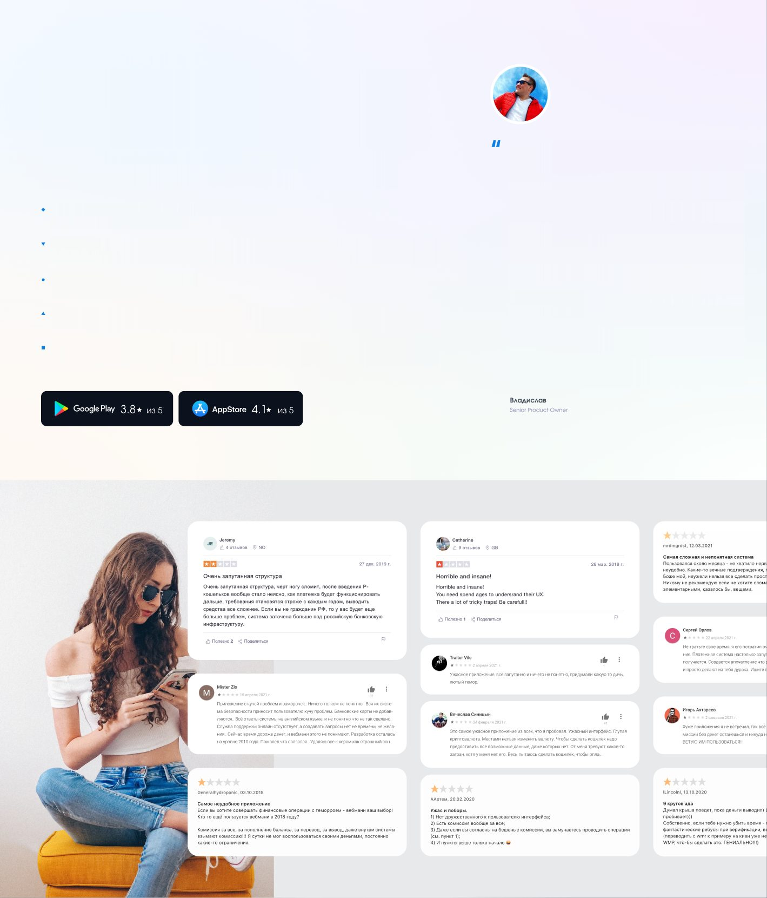
Проектирование
Новая упрощённая структура оптимизирует навигацию и приводит функционал к привычному виду электронного кошелька, знакомого большинству пользователей, но учитывает особенности платёжной системы.
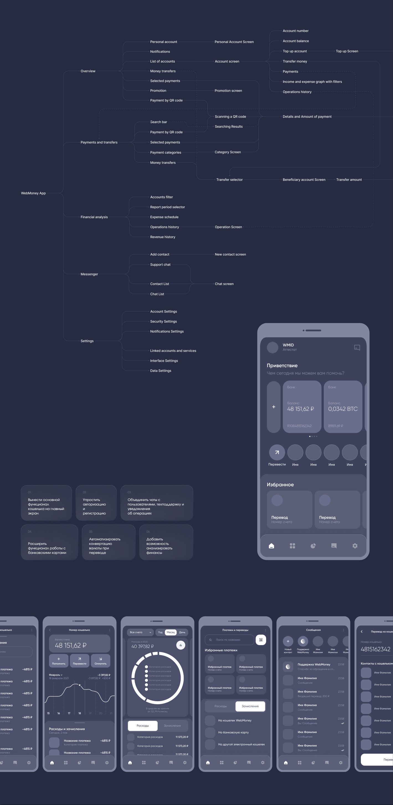
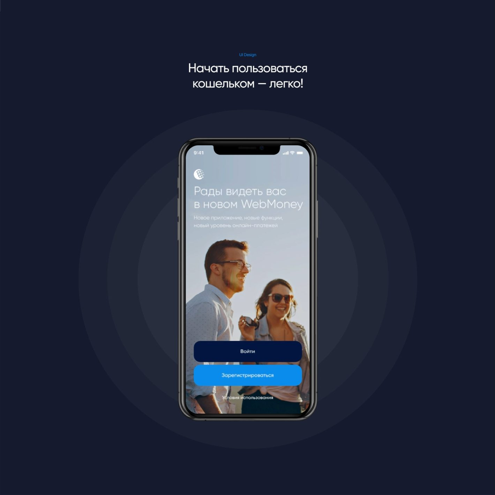

Чтобы войти или зарегистрироваться в приложении, достаточно ввести номер телефона и код из SMS
Простая и интуитивно понятная система безопасности, знакомая любому пользователю
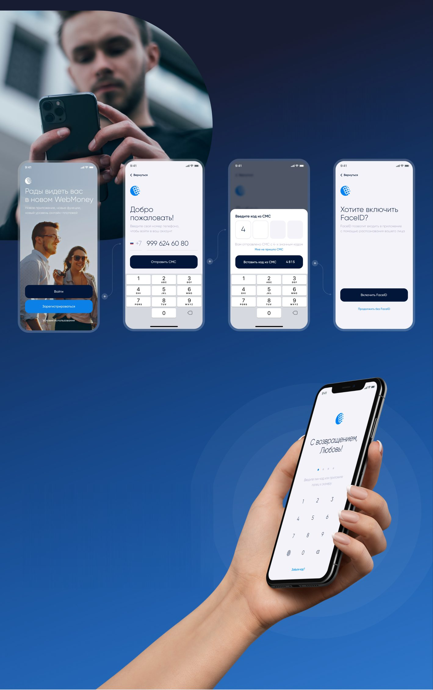
Главный экран позволяет в одно касание проверять баланс кошельков, переводить деньги другим пользователям, осуществлять платежи, переходить к профилю, сообщениям и уведомлениям.
Новые функции кошелька
Внутри кошелька к ранее имевшимся быстрым операциям добавлен краткий анализ финансов с возможностью выбора периода и история операций с балансом.
К переводам добавлены комментарии, которые также отображаются в мессенджере
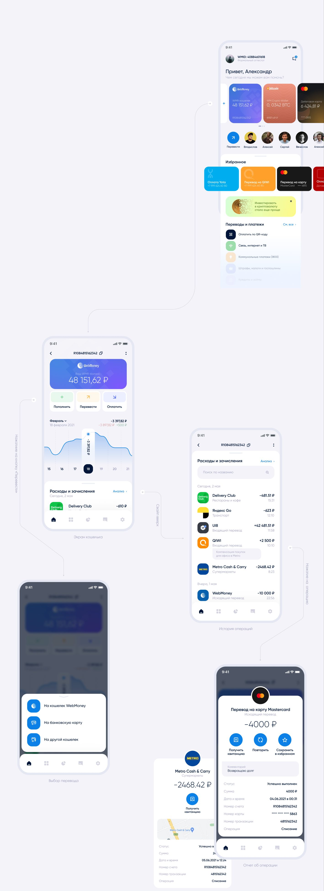
Быстрый доступ ко всем функциям счёта
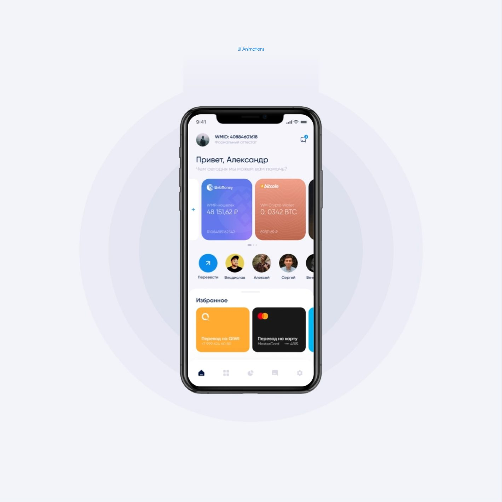
Интерфейс построен по принципам атомарного дизайна
Это позволяет быстро создавать новое user-friendly приложение с фокусом на простоте, удобстве и функциональности.
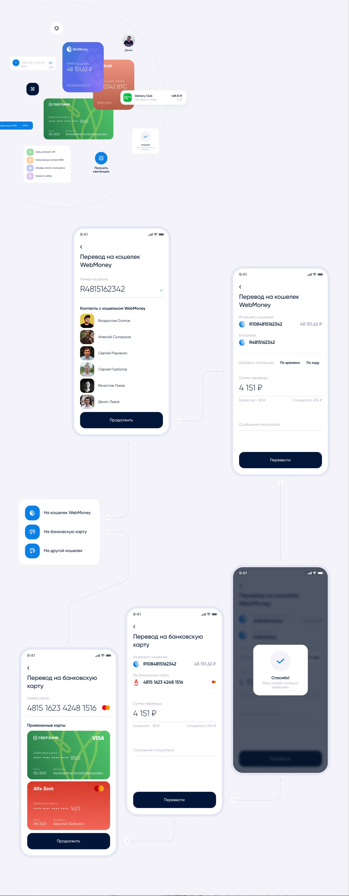
Упорядоченные категории и избранные платежи позволяют быстро найти нужную операцию
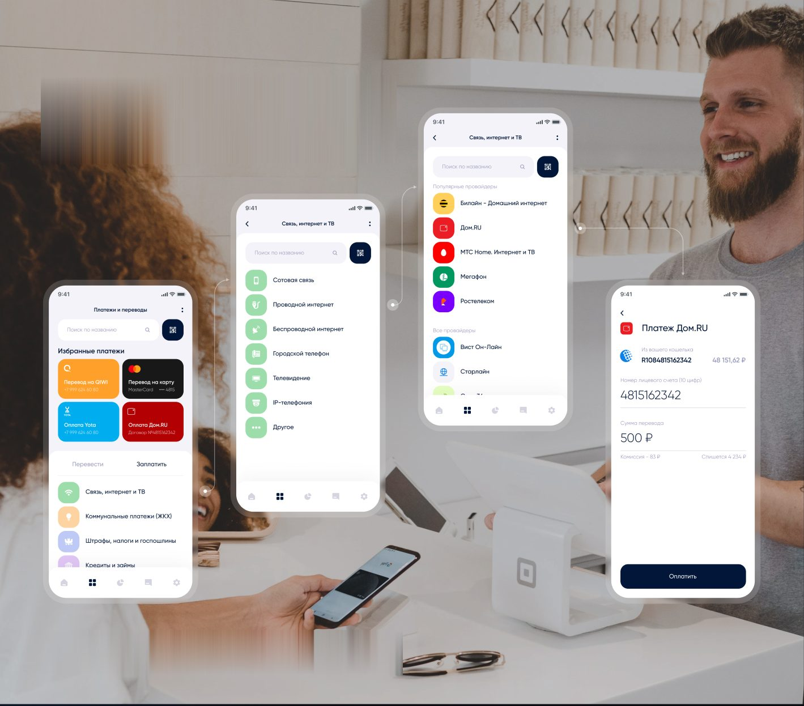
Решена распространённая проблема анализа финансов
В большинстве случаев функционал анализа финансов у сервисов-конкурентов позволяет просматривать графики и диаграммы без возможности изучить их легенды. Чтобы понять, к чему относится значение на диаграмме, нужно прокрутить к соответствующей категории расходов.
В новом интерфейсе кошелька категории расходов обозначены на графике и расположены в пределах одного экрана
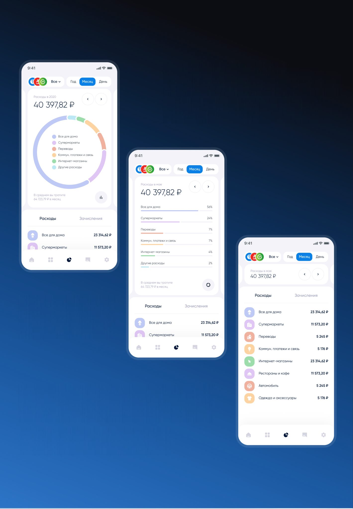
Сообщения
Чаты между пользователями и центр уведомлений объединены в один раздел. Теперь уведомления о переводах внутри WebMoney отображаются в чатах, а прикреплённые комментарии показаны в виде сообщений.
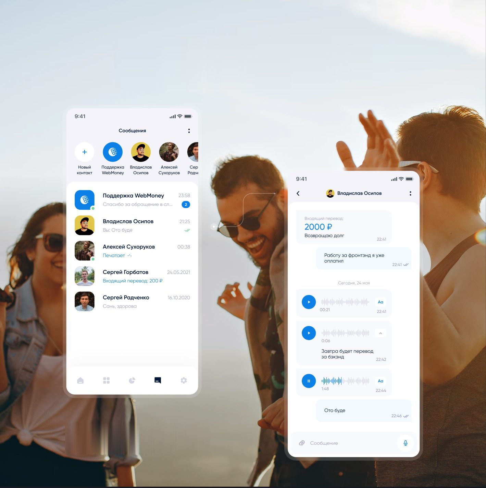
Тёмная тема
Тёмная тема тоже есть
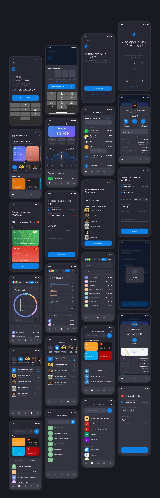
а также поддержкой различных каналов связи.

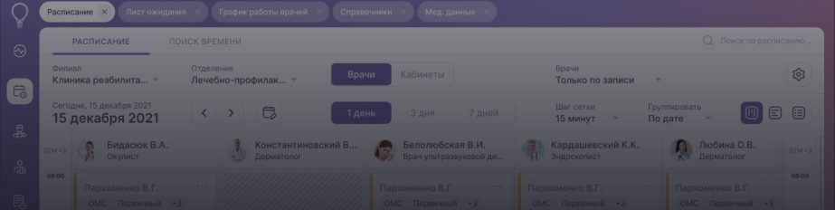